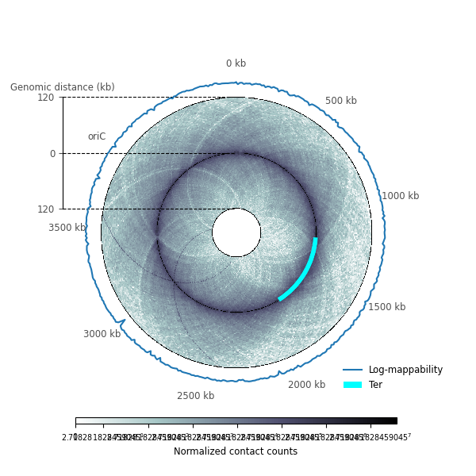

Note
Click here to download the full example code or to run this example in your browser via Binder
Macrodomain phenomenology¶
import numpy as np
from matplotlib import rc
rc('text', usetex=True)
import matplotlib.pyplot as plt
from matplotlib import colors
from circhic import datasets
from circhic import CircHiCFigure
from circhic.utils import generate_circular_map
from circhic.utils import generate_borders
from iced.normalization import ICE_normalization
# Load the data, compute the cumulative raw counts.
data = datasets.load_ecoli()
counts_raw = data["counts"]
lengths = data["nbins"]
log_cumul_raw_counts = np.log(counts_raw.sum(axis=0))
# Normalize the data using ICE, and keep the biases
counts, bias = ICE_normalization(counts_raw, output_bias=True)
#compute extreme values
vmax=np.max([counts[i,(i+1)%counts.shape[0]] for i in range(counts.shape[0])])
vmin=np.min(counts[counts>0])
granularity = 0.5
resolution = 9897
fig = plt.figure(figsize=(6, 6))
inner_radius, outer_radius = 0.15, 0.85
inner_gdis, outer_gdis = 1200000, 1200000
chrom_lengths = lengths * resolution
circhicfig = CircHiCFigure(chrom_lengths, figure=fig)
m, ax = circhicfig.plot_hic(counts, granularity=granularity, resolution = resolution,
outer_radius=outer_radius, inner_radius=inner_radius,
inner_gdis=inner_gdis, outer_gdis=outer_gdis,
vmin=vmin*10, vmax=vmax/2, cmap="bone_r",border_thickness=0.005)
rax = circhicfig.plot_raxis()
rax.set_yticklabels(["120", "0", "120"], fontsize="small")
rax.set_ylabel("Genomic distance (kb)", fontsize="small", color="0.3", position=(0,1.03))
rax.tick_params(colors="0.3")
lines, _ = circhicfig.plot_lines(
log_cumul_raw_counts, inner_radius=0.87, outer_radius=0.95,
color="C0")
ticklabels = ["%d~kb" % (i * 500) for i in range(8)]
tickpositions=[int(i*500000) for i in range(8)]
ticklabels.append(r"$\textit{oriC}$")
tickpositions.append(3925589)
ax = circhicfig.set_genomic_ticklabels(
tickpositions=tickpositions,
ticklabels=ticklabels,
outer_radius=0.96,fontdict={'fontsize':"small"})
ax.tick_params(colors="0.3")
inner_radius, outer_radius = 0.485, 0.515
band, _ = circhicfig.plot_bands(np.array([int(0.26*chrom_lengths[0])]), np.array([int(0.41*chrom_lengths[0])]), colors=('cyan',),
inner_radius=inner_radius, outer_radius=outer_radius)
cab = circhicfig.set_colorbar(m, orientation="horizontal")
cab.set_label("Normalized contact counts", fontsize="small")
fig.legend((lines[0],band), ("Log-mappability","Ter"), fontsize="small",
bbox_to_anchor=(0.8, 0.1, 0.15, 0.15), frameon=False)
print("")
Total running time of the script: ( 0 minutes 1.997 seconds)